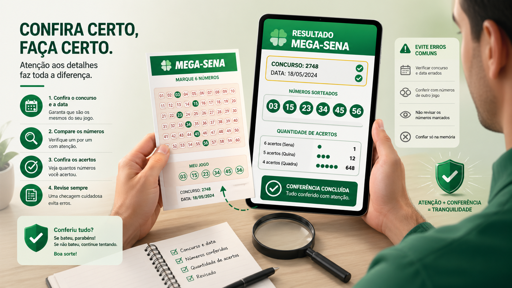

Como conferir o resultado da Mega-Sena corretamente e evitar erros comuns
Conferir uma aposta da Mega-Sena parece algo simples à primeira vista, mas muitos usuários cometem erros básicos nesse processo. Em vários casos, a falha não está na leitura dos números, mas na comparação com o concurso errado, na interpretação apressada do resultado ou na falta de atenção a detalhes importantes.
Neste artigo, você vai entender como conferir o resultado da Mega-Sena corretamente, quais são os erros mais comuns nessa etapa e quais cuidados ajudam a tornar a verificação mais clara, organizada e segura.

O primeiro passo é confirmar o concurso correto
Antes de comparar as dezenas, o usuário deve verificar o número do concurso e a data do sorteio. Esse é um dos pontos mais importantes de toda a conferência. Comparar uma aposta com o resultado de outro concurso é um erro comum e pode gerar interpretações totalmente erradas.
Por isso, sempre vale confirmar se o resultado consultado corresponde exatamente ao sorteio em que a aposta foi registrada. Esse cuidado simples evita boa parte das confusões.
Como comparar as dezenas da forma correta
Depois de confirmar o concurso, o próximo passo é comparar as dezenas apostadas com as dezenas sorteadas. O que importa nessa comparação é a coincidência dos números, e não a ordem em que eles aparecem.
Isso significa que, se os mesmos números estiverem presentes, a sequência visual não altera o acerto. O foco deve estar em identificar quantas dezenas coincidem entre a aposta e o resultado oficial.
Entenda a diferença entre Quadra, Quina e Sena
Na Mega-Sena, existem três faixas principais de premiação. A Quadra corresponde ao acerto de 4 números. A Quina corresponde ao acerto de 5 números. Já a Sena representa o acerto dos 6 números sorteados.
Saber disso é importante porque algumas pessoas olham apenas para a possibilidade de acertar todos os números e acabam deixando de perceber outras faixas de premiação.
Erros comuns na hora de conferir
Entre os erros mais frequentes estão comparar com o concurso errado, ignorar a data do sorteio, interpretar a ordem dos números como fator relevante e fazer a conferência de forma apressada.
Outro erro comum é confiar em fontes não verificadas sem fazer uma checagem final em um ambiente confiável. Quando a conferência é feita sem atenção, o risco de engano aumenta bastante.
Ferramentas de apoio podem ajudar
Ferramentas de consulta, histórico e apoio informativo podem tornar a verificação mais prática, especialmente para quem deseja consultar combinações anteriores ou revisar concursos recentes.
No Consulta Mega, esse tipo de navegação pode ajudar o usuário a organizar melhor a conferência, explorar resultados anteriores e entender com mais contexto as dezenas já registradas no histórico do site.
A validação oficial continua sendo indispensável
Mesmo usando ferramentas de apoio, a validação oficial de concursos, bilhetes e premiações deve sempre ser feita pelos canais oficiais da Caixa. Essa etapa é essencial sempre que houver necessidade de confirmação definitiva do resultado.
Em outras palavras, a consulta informativa ajuda na organização e no entendimento, mas não substitui a conferência oficial.
Conclusão
Conferir o resultado da Mega-Sena corretamente exige atenção a detalhes simples, mas muito importantes: número do concurso, data do sorteio, comparação correta das dezenas e entendimento das faixas de premiação.
Quanto mais cuidadosa for essa verificação, menor a chance de erro e maior a clareza na interpretação do resultado. Para quem acompanha concursos com frequência, esse cuidado faz toda a diferença.